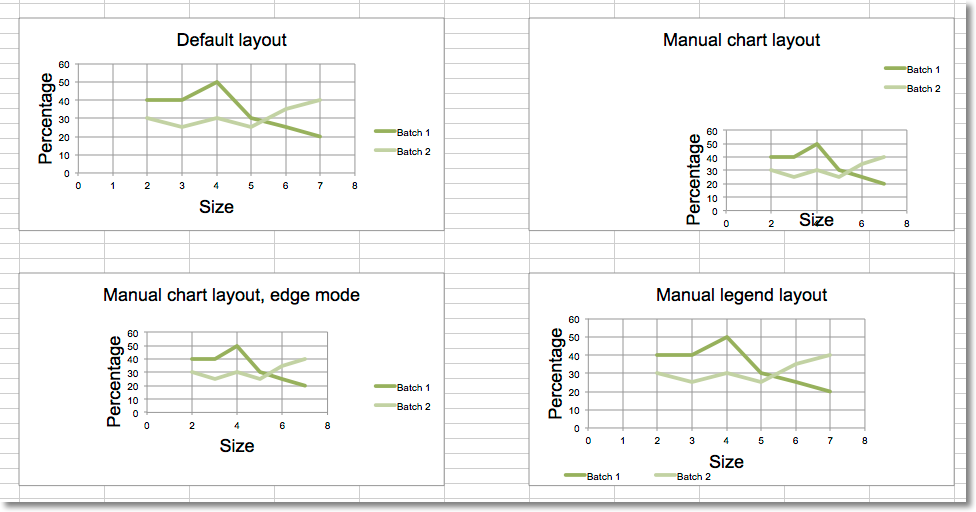

Changing the layout of plot area and legend¶
The layout of the chart within the canvas can be set by using the layout property of an instance of a layout class.
Chart layout¶
Size and position¶
The chart can be positioned within its container. x and y adjust
position, w and h adjust the size . The units are proportions of the
container. A chart cannot be positioned outside of its container and the
width and height are the dominant constraints: if x + w > 1, then x = 1 - w.
Mode¶
In addition to the size and position, the mode for the relevant attribute can also be set to either factor or edge. Factor is the default:
layout.xMode = edge
Target¶
The layoutTarget can be set to outer or inner. The default is outer:
layout.layoutTarget = inner
Legend layout¶
The position of the legend can be controlled either by setting its position:
r, l, t, b, and tr, for right, left, top, bottom and top
right respectively. The default is r.
legend.position = 'tr'
or applying a manual layout:
legend.layout = ManualLayout()
from openpyxl import Workbook, load_workbook
from openpyxl.chart import ScatterChart, Series, Reference
from openpyxl.chart.layout import Layout, ManualLayout
wb = Workbook()
ws = wb.active
rows = [
['Size', 'Batch 1', 'Batch 2'],
[2, 40, 30],
[3, 40, 25],
[4, 50, 30],
[5, 30, 25],
[6, 25, 35],
[7, 20, 40],
]
for row in rows:
ws.append(row)
ch1 = ScatterChart()
xvalues = Reference(ws, min_col=1, min_row=2, max_row=7)
for i in range(2, 4):
values = Reference(ws, min_col=i, min_row=1, max_row=7)
series = Series(values, xvalues, title_from_data=True)
ch1.series.append(series)
ch1.title = "Default layout"
ch1.style = 13
ch1.x_axis.title = 'Size'
ch1.y_axis.title = 'Percentage'
ch1.legend.position = 'r'
ws.add_chart(ch1, "B10")
from copy import deepcopy
# Half-size chart, bottom right
ch2 = deepcopy(ch1)
ch2.title = "Manual chart layout"
ch2.legend.position = "tr"
ch2.layout=Layout(
manualLayout=ManualLayout(
x=0.25, y=0.25,
h=0.5, w=0.5,
)
)
ws.add_chart(ch2, "H10")
# Half-size chart, centred
ch3 = deepcopy(ch1)
ch3.layout = Layout(
ManualLayout(
x=0.25, y=0.25,
h=0.5, w=0.5,
xMode="edge",
yMode="edge",
)
)
ch3.title = "Manual chart layout, edge mode"
ws.add_chart(ch3, "B27")
# Manually position the legend bottom left
ch4 = deepcopy(ch1)
ch4.title = "Manual legend layout"
ch4.legend.layout = Layout(
manualLayout=ManualLayout(
yMode='edge',
xMode='edge',
x=0, y=0.9,
h=0.1, w=0.5
)
)
ws.add_chart(ch4, "H27")
wb.save("chart_layout.xlsx")
This produces four charts illustrating various possibilities:
